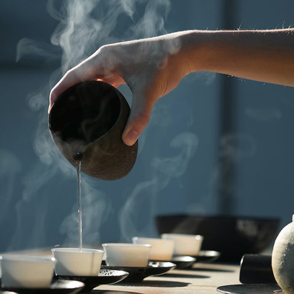

About Sweetea
Sweetea is a small business created solely by Baily Morgan. We are a unique tea shop that sells handmade tea blends and other tea-based items such as mugs, teapots, tea steepers, special honey mixes, etc. We aim to provide freshness with our in house teas and baked goods.
The idea behind Sweetea came from Baily's strong love of tea as a kid. The name was inspired by her cat, Sweetie, who sits on her lap while she drinks tea daily!